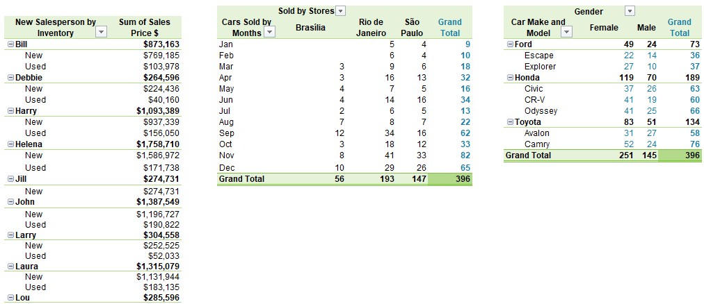

Congratulations! You have now been promoted to office manager at the car dealership you worked for in an earlier project. You have a meeting with the owner and need to be able to show how well the sales team and the different stores are doing.
Requirements
Dashboard Sheet: Evaluate the performance of each store. Which stores are performing well and which are not? What are the key metrics that indicate their performance?
Create a drop-down list that includes the names of all fourteen new salespeople. For the salesperson selected in the drop-down list, calculate the following on the dashboard:
Create another drop-down list that includes the names of all three stores. For the selected store, calculate the following on the dashboard:
Pivot Tables Sheet: Create the following three pivot tables. For each one, be intentional about which placement for row and column headings makes the data easiest to read.
No insights to display.